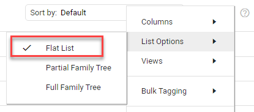
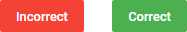
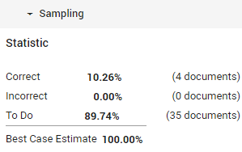

Quality Control
Perform a Quality Control
Use Sampling to evaluate the results of the review process. For example, evaluate the tagging results of individual users.
A sample will be created from all documents currently available in the Document List (after filtering/searching).
Select Settings > Sampling > Create for Documents/Selection.
1 - Sampling
- Define the Sample Name.
- Define the Sample Description (the purpose of the sample).
- Define the Sample Size (in percentages) and the Sample Split (documents or families).
Note: With the Flat List option in Document List selected, only documents will be sampled.

- Duplicates are excluded by default. To include duplicates, deselect the 'Exclude duplicates' checkbox.
- Click Next.
2 - Preview
- Evaluate each document in the sample set with either Incorrect or Correct.
Note: Most features will be disabled, however you will be able to download files that cannot be displayed in Document View. This allows you to determine whether the file was correctly reviewed or not.

- Though related documents are shown and can be viewed via the Conversation/Document Family panes (to allow for a better evaluation), they are not part of the sample set.
Return to the sample set via 'Go back to the original sample document'.

- After each evaluation, the next document is shown automatically.
- Also, after each evaluation, the Sampling Statistics are updated.

- When all documents have been evaluated, step 3 - Apply appears.
- Abort will result in a partially reviewed sample set, which cannot be finished at a later time.
You will need to create a new sample.

3 - Apply
- The Sampling Statistics are shown.
- You can choose to change the sampling settings. If you choose to do so, the current sampling results will be lost.

- If you are satisfied with the results of the samping, click Save.
The sample will be saved on the Sampling Management Page.